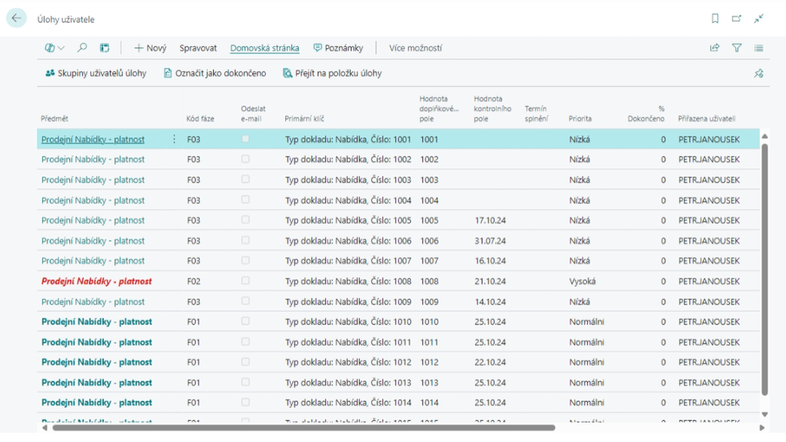
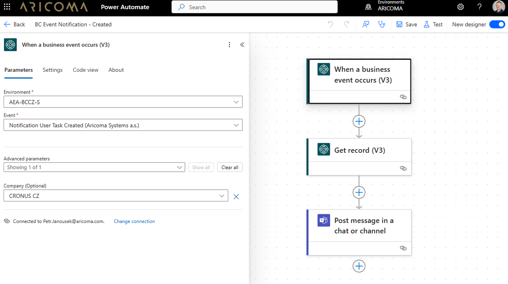

Správa upozornění
Update: 12.12.2024
Modul Správa upozornění v Dynamics 365 Business Central umožňuje uživatelům snadno vytvářet upozornění pro různé tabulky a pole bez nutnosti programování. Díky možnosti filtrování záznamů mohou uživatelé sledovat pouze relevantní položky a definovat fáze událostí pro monitorování jejich vývoje v čase. Upozornění jsou standardně generována jako Úlohy uživatele a mohou být také zasílána emailem. Upozornění formou emailu může být buď s pevně definovanou jednoduchou strukturou nebo email s dynamickým obsahem vytvářeným prostřednictvím funkcionality Word rozvržení.

Pro pokročilé notifikace modul generuje integrační události (business events), které umožňují propojení s externími systémy jako je Power Automate, Dataverse a jiné. Tyto systémy mohou reagovat na události a provádět další akce, jako je vytváření oznámení v Teams nebo záznamů v SharePoint. Upozornění lze vytvářet ručně nebo automaticky prostřednictvím Fronty úloh, což zajišťuje flexibilitu a efektivitu v řízení procesů.

Klíčové funkce
- Uživatelská definice upozornění na události systému: Modul umožňuje flexibilně vytvářet upozornění pro téměř libovolné tabulky a pole systému bez nutnosti dalšího programování. Záznamy je možné různě filtrovat a tím sledovat pouze požadované položky.
- Události lze sledovat v čase: Uživatelé mohou definovat fáze událostí a sledovat tak jejich vývoj v čase, což umožňuje proaktivní reakce a lepší řízení procesů.
- Upozornění formou Úlohy uživatele a emailem: Upozornění jsou standardně vytvářena jako Úlohy uživatele a mohou být současně zasílána emailem, což zajišťuje, že uživatelé jsou vždy informováni.
- Integrace s Power Automate pro pokročilé notifikace: Modul současně generuje integrační události (business events), které umožňují propojení s externími systémy jako jsou Power Automate, Dataverse a jiné. Tyto systémy mohou reagovat na události a provádět další akce, jako je vytváření oznámení v Teams nebo záznamů v SharePoint, což zvyšuje automatizaci a efektivitu.
- Ruční i automatické vytváření upozornění: Upozornění mohou být vytvářena ručně spuštěním funkce Zpracovat události nebo automaticky prostřednictvím Fronty úloh, což poskytuje flexibilitu a pohodlí při správě upozornění.
Praktické scénáře použití
- Upozornění na blížící se vypršení platnosti prodejních nabídek
- Upozornění na vytvoření Prodejní objednávky s kratším datem dodání jak 2 týdny
- Upozornění na blížící se splatnost pohledávek
- Upozornění na založení nového zboží
- Upozornění na založení nového zákazníka nebo dodavatele
- Upozornění na vytvoření nové výrobní, montážní nebo servisní zakázky
- Upozornění na dokončení výrobní, montážní nebo servisní zakázky
- Upozornění na přidělení Servisní zakázky
- Upozornění na zaplacení zálohové faktury
- Upozornění na zaúčtovaný příjem na zadaný sklad
- Upozornění na převod zboží na zadaný sklad např. expediční lokaci, recyklační sklad pro likvidaci zboží, apod.
Viz také